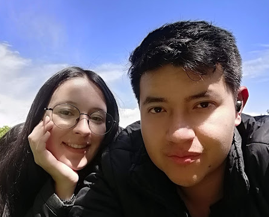
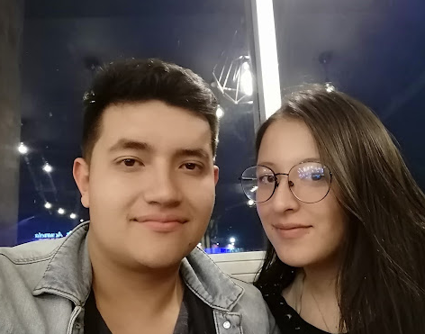
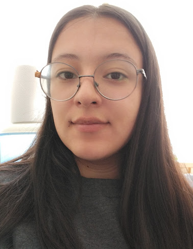
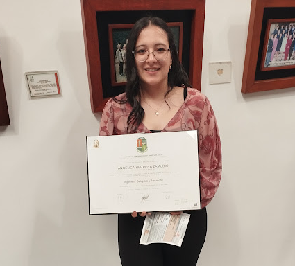
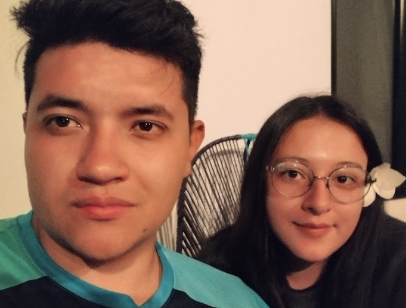

Cuando te conoci me quede asombrado por tu belleza, como siempre te lo he mencionado, tu eres muy hermosa, y ante mis ojos eres una diosa, queria hacerte este detalle para demostrar todo lo que siento por ti, se que no hemos pasado un buen momento ultimamente, pero yo solo pienso en ti de la siguiente forma
Desde que comence a salir contigo, antes de ser pareja, me di cuenta que el estilo de vida era demasiado diferente,sin embargo yo queria estar contigo, algo me llamaba de ti, eres una mujer excelente, me sentia atraido a tu manera de ser, a tu belleza, a tu escencia, por esa razon era que a pesar de todo, yo seguia insistiendo, esparandote, esperando mi oportunidad para ganarme ese espacio en tu corazon, y este es un recuerdo muy hermoso para mi.
Empezamos una relacion bonita, en donde los dos teniamos ese misterio sobre el otro, nos alimentaba el deseo de conocer mas del otro, y esa incertidumbre sobre lo que nos depararia el futuro, pero con esa esperanza de que tendriamos una relacion sana y fuerte, que estariamos juntos contra viento y marea, haciendo el equipo perfecto, complementandonos con nuestra acciones y fortaleciendonos cada dia que pasaba.
Poco a poco me he dado cuenta que en este transacurso de tiempo, me he alejado mucho de ese hombre el cual se ganaba tu corazon, con pequeños detalles, no es que no sienta lo mismo, solamente que por diferentes motivos, por estres, por muchas cosas que entre mas lo pienso, menos le tomo sentido y valor a ese tipo de cosas, estoy en un punto de riesgo, en donde estoy por perder a la mejor mujer que he conocido, y creeme que yo no quiero perder a una mujer tan fiel y hermosa como tu, muchas veces estoy estresado y desilucionado, pero recuerdo la imagen que voy a colocar a continuacion, esa imagen es todo por lo que yo me esfuerzo, no por nada yo la tengo dentro de mi fondo de pantalla, dado que cada vez que la miro, deseo ser un mejor yo para lograr que esa mujer no se aleje de mi lado.
En estos ultimos años que he estado a tu lado, han sido los mejores que he podido vivir, estoy orgullos de ver la mujer en la que te estas convirtiendo, culminando los logros que te has propuesto,y yo solamente deseo estar a tu lado cuando cumplas muchos mas.
Se por lo que estamos pasando, y se que estamos muy susceptibles a cualquier minimo detalle pelear, la verdad lamento que estes pasando por todo esto, pero yo con estos gestos te quiero demostrar que realmente estoy dispuesto a ser el hombre que una mujer como tu merece, se lo que puedes pensar en estos momentos, lo tengo muy claro, que nada te asegura que en un futuro las cosas no van a ser iguales, pero yo solo te quiero asegurar una cosa, no estoy seguro de lo que la vida me pueda deparar en un futuro, lo unico que si estoy seguro es que quiero que cada momento que yo viva, pueda estar CONTIGO,depues de todo hacemos una linda pareja.
A continuacion te dejo unos enlaces para que los puedas ver, fueron realizados con mucho cariño.